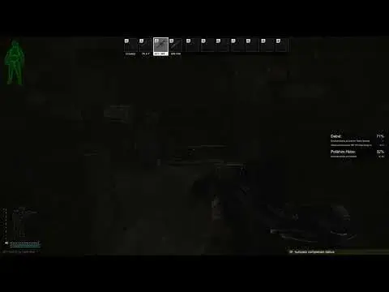

Quest Tracker
- Downloads
- 145,329
- Favourites
- 98
- Mod lists
- 188
Features
- Quickly see your tracked quest progress via an in-game overlay at the push of a button, or by completing quest objectives
- Easily toggle whether a quest is tracked by right-clicking it in either your player task list, or vendor quest list
- Tell which tasks are tracked at a glance via the Status column in either your player task list, or vendor quest list
- Have a more simplified view with just quest names and their overall progress, or include individual quest objectives for a more advanced look at your quests
- Separate tracked quest lists for each server profile
Preview:

Installation
1) Open the downloaded zip file in 7-zip
2) Select the folders in the zip file in 7-zip
3) Drag the selected folders from 7-zip into your SPT folder
Installation Video:

Usage
- Toggle whether a quest is tracked by right-clicking on it, either in your player task list, or a vendor’s quest list
- Note: Only quests that are currently active can be tracked. Completed, locked, or failed quests can not be tracked
- Whether a quest is tracked is visible via the “Status” column in the player task list, and the right side Status text in the vendor quest list.
- By default, the keybind to show the task list in-raid is i
Configuration
Configuration is done via the F12 menu. The below table includes the list of available configuration options, what they do, and what their default value is.
SettingDescriptionDefaultVisible At Raid Start
Whether the quest tracker panel is visible at raid start.
truePanel Toggle KeyThey key to press to toggle the quest tracker panel visibilityiAuto HideWhether to automatically hide the quest tracker panel after a timeouttrueAuto Hide TimerHow long to show the quest tracker panel when either Auto Hide is set, or Show On Objective Progress is enabled5 secondsShow On Objective ProgressWhether to temporarily show the quest tracker panel any time you advance a quest objective
The panel shows for “Auto Hide Timer” secondstrueInclude Current Map QuestsWhether to include all quests for your current map in the quest tracker panel, not just those you’ve explicitly tracked. This does NOT include tasks with the location marked as “Any”falseExclude Other Map QuestsWhether to exclude quests that are explicitly not for your current map from the quest tracker paneltrueProgress As Percent
Whether to show the total quest progress as a percent, instead of a [current]/[total] text display
true
Hide Completed Quests
Whether to remove quests that are ready to hand in from the quest tracker paneltrueShow Objectives
Whether to include quest objectives underneath each quest, including their current progress
trueObjectives As Percent
Whether to show quest objective progress as a percent, instead of a [current]/[total] text display
false
Hide Completed Objectives
Whether to hide completed objectives from the objective list
trueMaximum Width
The maximum width of the panel before text wraps
1/6 Screen WidthPanel TransparencyThe transparency value for the panel background40%Font SizeThe font size of quest names and their progress in the quest tracker panel30Objective Font SizeThe font size of quest objectives and their progress in the quest tracker panel20AlignmentWhether to snap the quest tracker panel to the right or left side of the screenRight ### Known Issues & Limitations
The following is a non-exhaustive list of issues and limitations
- Some daily/weekly tasks may have confusing objectives, such as missing what map to extract from
- Sometimes the vendor quest list “Tracked!” text gets overwritten with “Active” for daily/weekly quests
- If something goes wrong in the plugin, it can break interacting with the Quest list. A restart of the client should resolve this
Compatibility
There are no currently known conflicts with this mod.
If you are running my “Task List Fixes” plugin, please make sure you are running the latest version (1.2.2 or later) to support sorting tracked quests to the top of your player task list.
If you enjoy my work, you can feed my caffeine addiction
Version
1.6.0
- Update for SPT 4.0.0
Version
1.5.1
This version will only work with SPT 3.11.x
Tracking can now be done at the objective level, useful for tasks that span multiple maps (Such as Shooter Born in Heaven)
- Tracking an objective will automatically track the parent quest
- Untracking the last tracked objective on a quest will untrack the parent quest
- If no specific objectives are tracked, all objectives are shown in the quest tracker
Note that this update will clear any previously tracked quests, as the structure of the tracking file has changed
Version
1.5.0
This version will only work with SPT 3.11.x
Update for SPT 3.11
- Show “Factory day” tasks when on Factory Night
- Show “Ground Zero” tasks when on Ground Zero High
- Show Marathon tasks no matter the map (Treat them the same as “any” location), as they don’t include all required maps in their conditions
Version
1.4.1
This version will only work with SPT 3.10.x
- Fix issue when using Fika Dedicated where the tracker list wouldn’t show in-raid
Version
1.4.0
This version will only work with SPT 3.10.x
- Update for SPT 3.10.0
Version
1.3.0
This version will only work with SPT 3.9.x
- Update for 3.9.0
Version
1.2.0
This version is NOT version agnostic, and REQUIRES SPT 3.8.0
Update for 3.8.0
Known Issues:
- Some daily/weekly tasks may have confusing objectives, such as missing what map to extract from
Version
1.1.0
This version was written to be generic, and support as many future versions of SPT as possible. Currently only tested on 3.7.0-3.7.6
Changelog:
- Re-organized settings. Note: Some of your settings will have reset because of this.
- Allow hiding completed quests and objectives
- Allow setting a max width (Default 1/6th screen width)
- Quest name and objectives will now wrap if they won’t fit on a single line
- Allow setting panel background transparency
- Allow aligning panel to the left or right side of the screen
- Make version agnostic
-
Officially tested/supported on SPT 3.7.0 - 3.7.6
-
User tested as working on: SPT 3.6.1
-
Known Issues:
- Some daily/weekly tasks may have confusing objectives, such as missing what map to extract from
Version
1.0.0
This version will only work with SPT 3.7.1
Initial Release